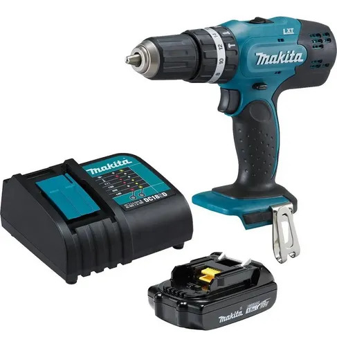
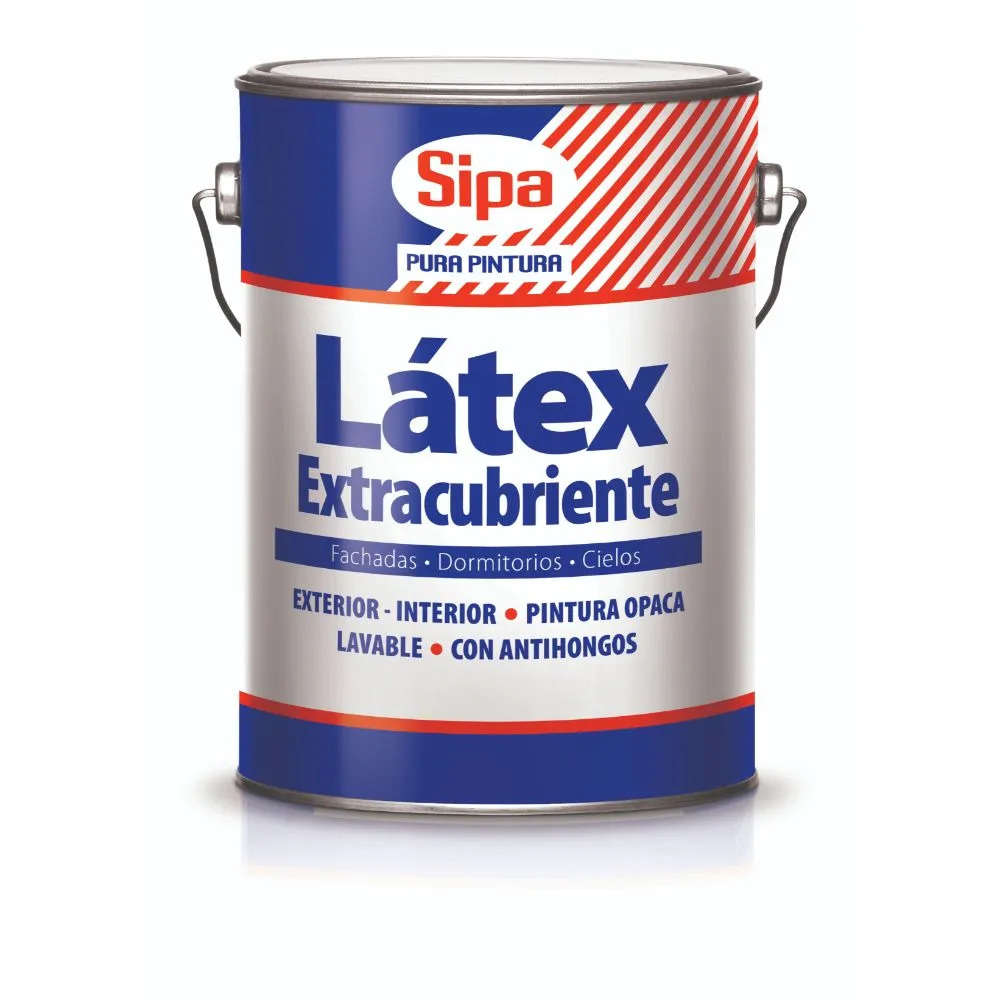

Cómo elegir el mejor taladro percutor para tu taller
Descubre las diferencias en potencia, voltaje y capacidad de mandril antes de elegir tu herramienta Makita o Skil.

Descubre las diferencias en potencia, voltaje y capacidad de mandril antes de elegir tu herramienta Makita o Skil.

Prepara tus muros utilizando pinturas látex e impermeabilizantes para evitar la humedad en épocas frías.